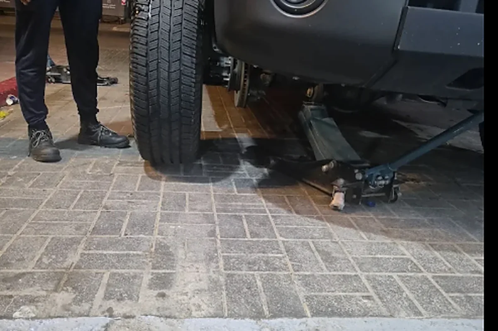

الفرق المبسط بين الميزان والترصيص
الميزان الإلكتروني، أو ضبط زوايا العجلات، يتعلق باتجاه وزوايا الإطارات بالنسبة إلى السيارة والطريق. عندما تكون الزوايا غير صحيحة قد لا تسير السيارة بشكل مستقيم كما ينبغي، وقد يتغير إحساس الدركسون أو يظهر تآكل غير منتظم في الإطارات. أما الترصيص فيتعلق بتوزيع الوزن حول العجلة والإطار أثناء الدوران. إذا كان هناك عدم اتزان، يمكن أن يظهر اهتزاز عند سرعات معينة. الفرق مهم لأن علاج السحب إلى جهة لا يكون بالضرورة هو نفس علاج الاهتزاز.
علامات شائعة أثناء القيادة
السيارة تسحب إلى جهة
من أشهر العلامات أن تشعر بأن السيارة تسحب إلى اليمين أو اليسار على طريق مستوٍ. قبل الحكم على الميزان، يجب الانتباه إلى أن ميل الطريق وضغط الإطارات وحالة الإطار نفسه قد تؤثر في اتجاه السيارة. إذا كان السحب واضحاً ومتكرراً، خصوصاً بعد التأكد من ضغط الإطارات، فالفحص مناسب. لا تحاول تعويض السحب باستمرار بضغط المقود في الاتجاه المعاكس، لأن ذلك لا يعالج السبب وقد يجعل القيادة متعبة.
الدركسون ليس مستقيماً
علامة أخرى هي أن الدركسون لا يبدو مستقيماً بينما السيارة تسير في خط مستقيم. قد تلاحظ أن شعار المقود مائل قليلاً رغم أن السيارة تتجه للأمام. هذه الملاحظة قد ترتبط بضبط الزوايا، لكنها تحتاج إلى فحص لأن وضع المقود يمكن أن يتأثر أيضاً بأعمال سابقة في نظام التوجيه أو التعليق. المهم هو ملاحظة التغير الجديد ومتى بدأ، خصوصاً إذا ظهر بعد صيانة أو اصطدام بحفرة قوية.
اهتزاز المقود
اهتزاز المقود أو جسم السيارة يرتبط غالباً بالترصيص أو بحالة الإطارات والعجلات، لكنه ليس دليلاً منفرداً كافياً. قد يظهر الاهتزاز عند نطاق معين من السرعات ثم يقل أو يتغير، وقد تكون أسبابه إطاراً غير منتظم، جنطاً متضرراً أو مشكلة أخرى في مجموعة العجلة. إذا ظهر اهتزاز جديد، لا تؤجله لفترة طويلة ولا تفترض أن الترصيص وحده سيحل كل شيء؛ اطلب فحص الإطار والعجلة أولاً.
تآكل الإطارات بشكل غير متساوٍ
تآكل الإطارات بشكل غير متساوٍ من الإشارات المهمة. انظر إلى سطح الإطار من الداخل والخارج، ولا تكتفِ بالنظر إلى الجزء الظاهر من الخارج. إذا كان جانب يتآكل أسرع من الآخر، أو ظهرت مناطق غير منتظمة على المداس، فقد يكون السبب ضغطاً غير صحيح أو زوايا عجلات أو مشكلة في التعليق أو دوران الإطار. التآكل غير المنتظم يقلل عمر الإطار وقد يؤثر في التماسك، لذلك اكتشافه مبكراً أفضل من الانتظار حتى يصبح الإطار غير صالح للاستخدام.
بعد تغيير الإطارات أو ضربة قوية
بعد تغيير الإطارات، يكون الترصيص عادة جزءاً مهماً من تركيب الإطار والعجلة بصورة صحيحة، خصوصاً إذا ظهرت اهتزازات بعد التركيب. أما ضبط الزوايا فلا يجب اعتباره تلقائياً نفس الخدمة؛ الحاجة إليه تعتمد على حالة السيارة ونتيجة الفحص. إذا استبدلت إطاراً بسبب تآكل غير منتظم، فمن المنطقي أن تسأل عن سبب التآكل قبل تركيب مجموعة جديدة حتى لا تتكرر المشكلة.
الضربة القوية في حفرة، صعود رصيف بعنف أو اصطدام العجلة قد يغير الإحساس بالسيارة. أحياناً لا يظهر ضرر واضح من الخارج، لكن السائق يلاحظ بعدها سحباً أو اهتزازاً أو اختلافاً في موضع المقود. في هذه الحالة يستحسن فحص الإطار والجنط والتعليق والزوايا حسب الحاجة. لا توجد طريقة دقيقة لتحديد المشكلة بالنظر فقط إلى السيارة من الخارج، خصوصاً إذا كان الضرر بسيطاً لكنه يؤثر في القيادة.
افحص قبل أن تفترض السبب
قبل طلب ميزان أو ترصيص، راقب الأعراض بوضوح: متى يحدث السحب؟ هل الاهتزاز يظهر عند سرعة محددة؟ هل ضغط الإطارات صحيح؟ هل حدثت المشكلة بعد تغيير إطارات أو بعد حفرة؟ هذه المعلومات تساعد الفني على بدء الفحص بشكل أفضل. كذلك من المفيد عدم تجاهل أي صوت أو ارتجاج آخر قد يشير إلى مشكلة مختلفة عن الإطارات نفسها.
ضغط الإطارات خطوة بسيطة يجب التأكد منها قبل تفسير أي سحب أو تغير في المقود. فرق الضغط بين الإطارات يمكن أن يغير إحساس السيارة، كما أن الضغط غير الصحيح قد يسبب تآكلاً غير منتظم ويؤثر في الراحة. افحص الضغط بالطريقة الموصى بها للسيارة، ثم لاحظ إن كانت الأعراض مستمرة. إذا استمر السحب أو الاهتزاز مع ضغط صحيح، يصبح فحص العجلات والزوايا أكثر منطقية.
كذلك قد تؤثر أجزاء التعليق والتوجيه في النتيجة. إذا كان هناك جزء متآكل أو فراغ في أحد المكونات، فقد لا يحل ضبط الزوايا المشكلة وحده أو قد تتغير الزوايا مرة أخرى بسرعة. لذلك الفحص الجيد لا يقتصر على قراءة جهاز الميزان، بل يتأكد أولاً من أن الإطارات والعجلات والأجزاء المرتبطة بها في حالة تسمح بالضبط. هذا مهم خصوصاً إذا كانت السيارة تعرضت لضربة أو بدأت الأعراض بعد صوت أو ارتجاج غير معتاد.
الفكرة الأساسية هي أن الميزان والترصيص ليسا علاجين عامين لكل مشكلة في الدركسون. الميزان يعالج زوايا العجلات عندما تحتاج إلى ضبط، والترصيص يعالج عدم اتزان العجلة والإطار. التشخيص الجيد يبدأ بالفحص، ثم يتم اختيار الخدمة المناسبة بناءً على النتيجة. إذا كانت سيارتك تسحب إلى جهة، أو يهتز المقود، أو لاحظت تآكلاً غير منتظم، ففحص العجلات والإطارات خطوة عملية قبل أن تصبح المشكلة أكبر. الاهتمام المبكر يساعد أيضاً على حماية الإطارات الجديدة من تكرار نمط التآكل نفسه.
فحص الميزان والإطارات في محطة البطين – العين.
الهاتف وواتساب: 050 137 5455 — يومياً من 9:00 صباحاً حتى 11:00 مساءً.